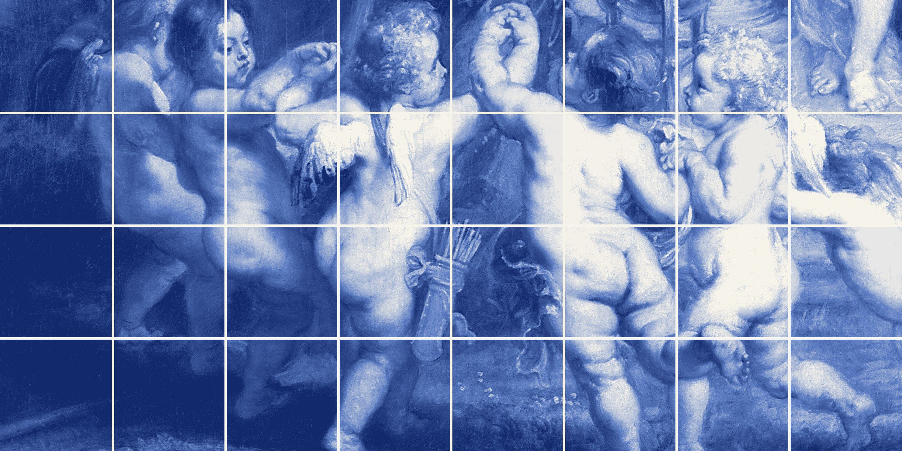
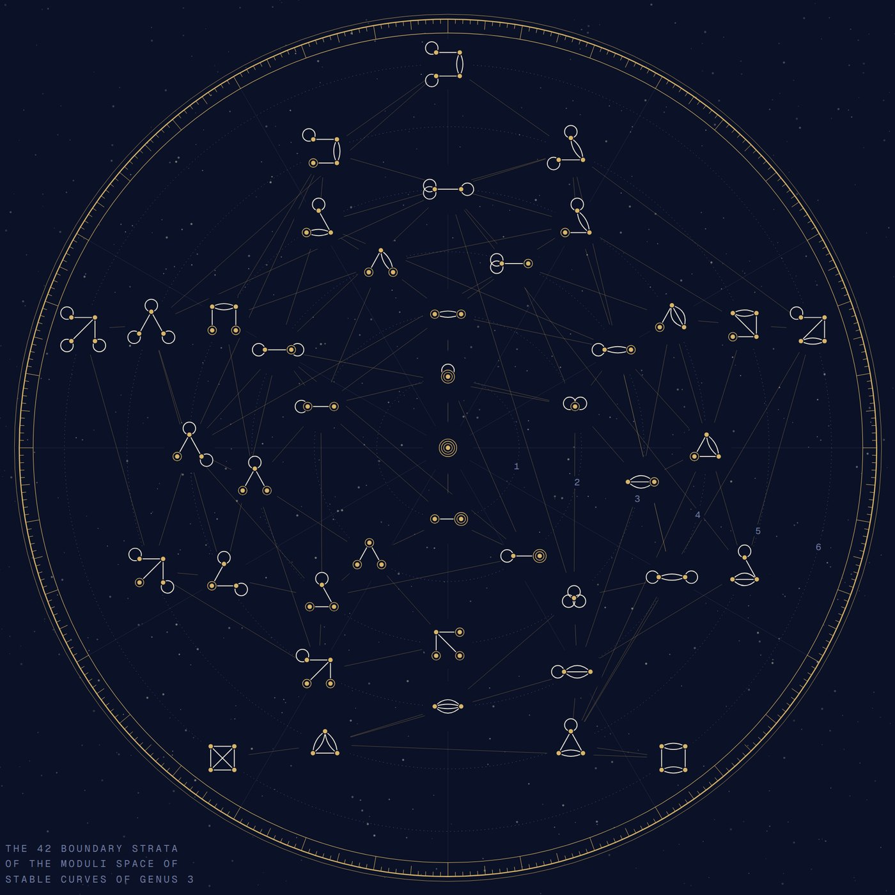

Moduli in Flanders
Antwerp, 24–25 March 2027

A workshop on the occasion of the honorary doctorate of
Rahul Pandharipande
Two days of lectures on moduli spaces at the University of Antwerp, ending with a general lecture by Rahul Pandharipande and the honorary doctorate ceremony on Thursday afternoon.
Speakers
- Alessio Cela
- Gavril Farkas
- Jeremy Feusi
- Jérémy Guéré
- Aitor Iribar López
- Alina Marian
- Dragos Oprea
Programme
Wednesday 24 March
| 9.30 – 10.30 | Lecture 1 To be announced |
| 10.30 – 11.00 | Coffee |
| 11.00 – 12.00 | Lecture 2 To be announced |
| 12.00 – 14.00 | Lunch |
| 14.00 – 15.00 | Lecture 3 To be announced |
| 15.00 – 15.30 | Coffee |
| 15.30 – 16.30 | Lecture 4 To be announced |
| 17.00 – 18.00 | Lecture 5 To be announced |
Thursday 25 March
| 9.30 – 10.30 | Lecture 6 To be announced |
| 10.30 – 11.00 | Coffee |
| 11.00 – 12.00 | Lecture 7 To be announced |
| 12.00 – 14.00 | Lunch |
| 14.00 – 15.00 | General lecture by Rahul Pandharipande |
| 15.30 – 19.00 | Honorary doctorate ceremony |
Practical information
- Venue
- University of Antwerp. Lecture room to be announced.
- Registration
- Details to be announced.
- Organiser
- Ignacio Barros, Department of Mathematics, University of Antwerp

The chart
The 42 boundary strata of the moduli space of stable curves of genus 3, drawn as constellations. Each one is a stable graph; a vertex of genus g carries g halos. The smooth curves sit in the centre, and each ring outwards adds one node, up to the five most degenerate curves on the rim. Faint lines join a stratum to its degenerations.
The tiles on this page show putti from Rubens's Feast of Venus (c. 1636–37), and on the poster they stand on a row of the seven stable graphs of genus 2.